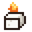
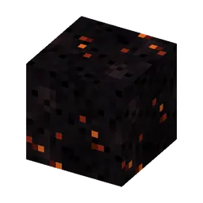
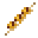
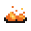
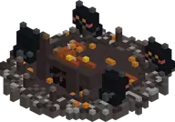

The Mikas stole the Grillguh's fire starters. Fix his barbecue and he teaches you his secret grill recipe.
De Mika's hebben de Aanmaakblokjes van de Grillguh gejat. Maak zijn barbecue weer heel en hij leert je zijn geheime grillrecept.
The Grillguh's questlineDe questline van de Grillguh
- Talk to him: "NJEG, mijn barbecue! De Mika's hebben mijn Aanmaakblokjes gejat!"Praat met hem: "NJEG, mijn barbecue! De Mika's hebben mijn Aanmaakblokjes gejat!"
- Repair the grillkool frame of his put (grillkool in the holes, cracked stones out) and tell him.Maak het grillkoolframe van zijn put weer heel (grillkool in de gaten, gebarsten stenen eruit) en zeg het hem.
- Go to a Mika camp: while the quest runs, every Mika you beat there drops an Aanmaakblokje (at most 3 in your pockets). Bring one back.Ga naar een Mika-kamp: zolang de quest loopt, laat elke Mika die je daar verslaat een Aanmaakblokje vallen (hooguit 3 op zak). Breng er een terug.
- Light his put with it: "VAHOEG, mijn barbecue brandt weer!" You get Grillguhs geheime recept (to craft Aanmaakblokjes yourself; the recipe stays in the grid) and a Grillguh-koksmuts. Lost the recipe? He gives you a new one.Steek zijn put ermee aan: "VAHOEG, mijn barbecue brandt weer!" Je krijgt Grillguhs geheime recept (om zelf Aanmaakblokjes te maken; het recept blijft liggen) en een Grillguh-koksmuts. Recept kwijt? Hij geeft je een nieuw.
After that his shop is open (for kaasknabbels):
Daarna is zijn winkeltje open (voor kaasknabbels):
| You getJe krijgt | PricePrijs |
|---|---|
 Aanmaakblokje | 12 |
 2 grillkool | 16 |
 2 gegrilde kaasknabbelsaté | 6 |
| 8 | |
 6 gloeikoolgruis | 10 |
| Koksdoekje | 16 |
| 24 | |
| 32 |
Guhdex: a new character page, "Een guh-kok met een torenhoge koksmuts en een schort." (rare, big barbecueput).
Guhdex: een nieuwe personagepagina, "Een guh-kok met een torenhoge koksmuts en een schort." (zeldzaam, grote barbecueput).
Steps (FTB quests)Stappen (FTB-quests)
The quest texts are in Dutch, like everything in the game.De questteksten zijn Nederlands, net als alles in het spel.
- Wie heeft hier gebarbecued?
Ergens in de Guhmensie liggen kapotte barbecues met een half grillkoolframe: de barbecueputten. Het superkompas (Barbecue > Barbecueput) wijst de weg.Ergens in de Guhmensie liggen kapotte barbecues met een half grillkoolframe: de barbecueputten. Het superkompas (Barbecue > Barbecueput) wijst de weg. - NJEG, mijn barbecue!
In de grote barbecueput zit de Grillguh. De Mika's hebben zijn Aanmaakblokjes gejat! Praat met hem.In de grote barbecueput zit de Grillguh. De Mika's hebben zijn Aanmaakblokjes gejat! Praat met hem. - Zwart als houtskool
Laat kaassaus over een blok steenkool stromen: sssss... grillkool! Maak er een paar.Laat kaassaus over een blok steenkool stromen: sssss... grillkool! Maak er een paar. - Het frame weer heel
Zet grillkool in de gaten van het frame van de Grillguh (de gebarsten stenen moeten eruit) en vertel het hem.Zet grillkool in de gaten van het frame van de Grillguh (de gebarsten stenen moeten eruit) en vertel het hem. - Gejatte Aanmaakblokjes
Ga naar een Mika-kamp. Zolang je de Grillguh helpt, laat elke Mika die je daar verslaat een Aanmaakblokje vallen. Breng er een terug!Ga naar een Mika-kamp. Zolang je de Grillguh helpt, laat elke Mika die je daar verslaat een Aanmaakblokje vallen. Breng er een terug! - VAHOEG, hij brandt weer!
Klik met een Aanmaakblokje in het grillkoolframe van de Grillguh. Zijn barbecue brandt weer, en je krijgt zijn geheime grillrecept!Klik met een Aanmaakblokje in het grillkoolframe van de Grillguh. Zijn barbecue brandt weer, en je krijgt zijn geheime grillrecept! - Chef Guh
Koop de Grillguh-koksmuts, het barbecueschort en het koksdoekje bij de Grillguh en trek ze je guh aan.Koop de Grillguh-koksmuts, het barbecueschort en het koksdoekje bij de Grillguh en trek ze je guh aan. - Grillguh in de Guhdex
Ga vlak naast de Grillguh staan: dan komt hij in je Guhdex.Ga vlak naast de Grillguh staan: dan komt hij in je Guhdex. - Het is hier heet, njeg!
Steek een grillkoolframe (4x5 tot 23x23) in de Guhmensie aan met een Aanmaakblokje en stap de Guhbarbecuether in. Eén stap daar is acht stappen in de Guhmensie!Steek een grillkoolframe (4x5 tot 23x23) in de Guhmensie aan met een Aanmaakblokje en stap de Guhbarbecuether in. Eén stap daar is acht stappen in de Guhmensie! - Houtskoolvlakte
Bezoek het bioom Houtskoolvlakte in de Guhbarbecuether.Bezoek het bioom Houtskoolvlakte in de Guhbarbecuether. - Satébos
Bezoek het bioom Satébos in de Guhbarbecuether.Bezoek het bioom Satébos in de Guhbarbecuether.🌳 Satébos - Worstenwoud
Bezoek het bioom Worstenwoud in de Guhbarbecuether.Bezoek het bioom Worstenwoud in de Guhbarbecuether. - Asdal
Bezoek het bioom Asdal in de Guhbarbecuether.Bezoek het bioom Asdal in de Guhbarbecuether.🌳 Asdal - Rookdelta
Bezoek het bioom Rookdelta in de Guhbarbecuether.Bezoek het bioom Rookdelta in de Guhbarbecuether. - Frituurvads in een emmer
Schep een emmer kaasfrituursaus uit een saus-zee. Heet!Schep een emmer kaasfrituursaus uit een saus-zee. Heet! - Lekker warm licht
Hak gloeikool van het plafond van de Barbecuether (met zijdezacht, of verzamel 4 gloeikoolgruis).Hak gloeikool van het plafond van de Barbecuether (met zijdezacht, of verzamel 4 gloeikoolgruis). - Te warm om te slapen
Probeer in de Barbecuether in bed te gaan. Wat zegt je guh?Probeer in de Barbecuether in bed te gaan. Wat zegt je guh? - Barbecue-bouwer
Maak houtskoolsteen stenen, roosterijzer tralies en een rookgat: bouw je eigen barbecue!Maak houtskoolsteen stenen, roosterijzer tralies en een rookgat: bouw je eigen barbecue! - Een burcht vol spiesen
Diep in de Barbecuether staan Spiesburchten: burchten van houtskoolsteen met lange bruggen. Het superkompas (Barbecue > Spiesburcht) weet er een.Diep in de Barbecuether staan Spiesburchten: burchten van houtskoolsteen met lange bruggen. Het superkompas (Barbecue > Spiesburcht) weet er een. - Van de grill gegrist
Versla een Vonk-Mika (bij zijn spawner in de Spiesburcht) en pak zijn grillspies.Versla een Vonk-Mika (bij zijn spawner in de Spiesburcht) en pak zijn grillspies. - Knekel-Mika's
Versla 5 Knekel-Mika's. Ze wonen in de Spiesburcht en in het Asdal.Versla 5 Knekel-Mika's. Ze wonen in de Spiesburcht en in het Asdal.⚔ Knekel-Mika ×5 - De Guhbrouwketel
Maak een Guhbrouwketel (ijzer, roosterijzer tralies en een grillspies) en stook hem op met grillspiespoeder.Maak een Guhbrouwketel (ijzer, roosterijzer tralies en een grillspies) en stook hem op met grillspiespoeder. - Guh-alchemist
Kaassaus in de pan, een ingrediënt erdoor (knabbels, gloeikoolgruis, moeraskaas of Mika's vet, guhslijm) en vullen maar: brouw een Guhdrankje.Kaassaus in de pan, een ingrediënt erdoor (knabbels, gloeikoolgruis, moeraskaas of Mika's vet, guhslijm) en vullen maar: brouw een Guhdrankje. - Alle Guhdrankjes
Brouw ze allemaal: Vahoegheid, Rookloop, Sluipknabbel en Guhsprong.Brouw ze allemaal: Vahoegheid, Rookloop, Sluipknabbel en Guhsprong. - Hoofdzaak
Knekel-Mika's laten heel soms een verkoolde mikakop vallen. Verzamel er drie.Knekel-Mika's laten heel soms een verkoolde mikakop vallen. Verzamel er drie. - Doorgebakken!
Zet 4 asblokken in een T en drie verkoolde mikakoppen erop: de Aangebrande Mika wordt wakker! Versla hem voor de gloeister.Zet 4 asblokken in een T en drie verkoolde mikakoppen erop: de Aangebrande Mika wordt wakker! Versla hem voor de gloeister. - Een baken van knabbels
Maak een Knabbelbaken (glas, de gloeister, grillkool), zet het op een piramide van knabbel- of vadsblokken en kies een guh-effect. Ook je guhs krijgen het!Maak een Knabbelbaken (glas, de gloeister, grillkool), zet het op een piramide van knabbel- of vadsblokken en kies een guh-effect. Ook je guhs krijgen het! - Vahoeg naar huis
Een zielige Rookguh zweeft rond in de Rookdelta. Voer hem kaasknabbels (of gooi ze naar hem) tot hij vahoeg naar huis zweeft.Een zielige Rookguh zweeft rond in de Rookdelta. Voer hem kaasknabbels (of gooi ze naar hem) tot hij vahoeg naar huis zweeft. - Rookguh-redder
Red 10 Rookguhs. Je Guhdex houdt bij hoeveel het er al zijn.Red 10 Rookguhs. Je Guhdex houdt bij hoeveel het er al zijn. - Wie heeft onze knabbels?
Vind het Mika-grillpaleis: een paleis van roosterijzer boven de kaasfrituursaus, vol gestolen kaasknabbels.Vind het Mika-grillpaleis: een paleis van roosterijzer boven de kaasfrituursaus, vol gestolen kaasknabbels. - Vads tegen buit
Draag iets van vahoege vads, dan laten de Nether-Mika's je met rust. Geef er een een vahoege vads-staaf: hij gooit je iets terug!Draag iets van vahoege vads, dan laten de Nether-Mika's je met rust. Geef er een een vahoege vads-staaf: hij gooit je iets terug! - Gloeiende wangetjes
In het Asdal woont de Asguh: grijs en roetig, met gloeiende wangetjes. Vuur doet hem niks. Tem er een!In het Asdal woont de Asguh: grijs en roetig, met gloeiende wangetjes. Vuur doet hem niks. Tem er een! - De Barbecuether in de Guhdex
Ga vlak naast een Rookguh, een Vonk-Mika, een Knekel-Mika en een Asguh staan.Ga vlak naast een Rookguh, een Vonk-Mika, een Knekel-Mika en een Asguh staan. - Asguh-knuffel
Geef een Asguh een kaasknabbel en zie hem gloeien van blijdschap.Geef een Asguh een kaasknabbel en zie hem gloeien van blijdschap. - Zo stil als een knabbel
Drink een Guhdrankje. Probeer de Sluipknabbel eens: dan hoort niemand je meer.Drink een Guhdrankje. Probeer de Sluipknabbel eens: dan hoort niemand je meer.
See alsoZie ook

BarbecueputStructuresBouwwerken The Guh BarbecuetherDe GuhbarbecuetherDimensionsDimensies
The Guh BarbecuetherDe GuhbarbecuetherDimensionsDimensies